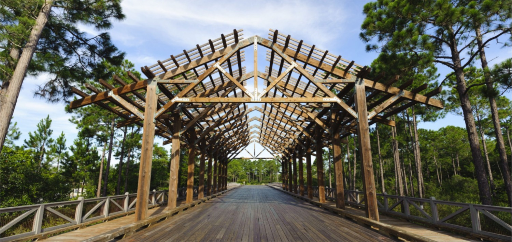

Walton County, Florida · Official district website
The roads, ponds and pines of NatureWalk, kept in public view.
The NatureWalk Community Development District is the local government that owns and maintains the roads, stormwater system, open spaces and conservation areas at NatureWalk at Seagrove. Meetings, budgets and records are all open to you, and all here.
Enforcement of the district's parking rules resumed September 8, 2025. Vehicles may not park on district streets, alleys, roadways or landscaped areas, except in Designated Parking Areas. Roam towing runs from midnight to 6:00 AM.
Residents and guests are prohibited from feeding or intentionally providing food to wildlife. Feeding makes animals dependent on people and more aggressive, and it attracts unwanted animals.
Keep pet food and garbage secured.
Do not attract or approach wildlife.
Stormwater · Encroachment
Pond work and encroachment letters
Innerlight Engineering is inspecting and surveying the stormwater system, including ponds behind homes. A strip of roughly 3 to 5 feet of district property typically sits behind lot lines that border the ponds. Encroachment letters have been sent.
The district, the HOA or the county? Pick your question.
NatureWalk has a Community Development District and a Homeowners' Association, and they do different jobs. Choose what you need and see who to contact.
Written from the district's published FAQ, contacts page and its 2023 “Background and Explanation of CDD Role and Functions” document.
Parking and towing
Where you can park, in plain English.
A summary of the Rules Relating to Parking Enforcement adopted August 11, 2022. The adopted rules and maps are the official version.
✓You can
Park in a Designated Parking Area. These include the paver parking pads between the sidewalk and the street.
Use any open pad. Pads are district property and first come, first served. The pad in front of a home does not belong to that home.
Have deliveries and service calls. Delivery and service vehicles may park on streets, alleys and roadways while actively working.
Load or unload for up to 60 minutes. Commercial vehicles, boats, RVs and trailers may stop on a street, alley or roadway to load or unload, but not on paver spots or sidewalks.
✕You cannot
Park on district streets, alleys, roadways or landscaped areas outside a Designated Parking Area. These are tow-away zones.
Park in the Sage Circle Designated Parking Areas between 11:00 PM and 6:00 AM.
Leave a commercial vehicle, boat, RV or trailer parked on district property, including in a parking pad.
Park a vehicle longer than 240 inches, take up more than one marked spot, or park without a valid state license plate.
Ask someone to move so you can use the pad in front of your home.
If your vehicle was towed
PBA Towing, 420 Church Street, Santa Rosa Beach. Open 9 AM to 5 PM. (850) 558-5442
Who authorizes a tow
PBA Towing patrols during roam hours, midnight to 6:00 AM. Otherwise a tow is authorized by the District Manager or designated supervisors under the adopted rules and maps.
Audience commentsAnyone may speak on matters that concern the district. Each person has three minutes.
Business administrationRoutine items for the Board's review and approval, such as minutes and monthly expenditures.
Business itemsItems that may need discussion, a motion and a vote. Some are held as a public hearing.
Staff reportsUpdates from the District Manager, Engineer and Counsel.
Supervisor requestsSupervisors ask staff to prepare items for future meetings.
Want an item on the agenda?Send a written request with an explanation to the District Manager at least 14 days before the meeting.
Maintenance concern?Maintenance items are handled by the District Manager outside the meeting. Call (850) 334-9055.
Need an accommodation?Contact the District Office at (850) 334-9055 at least 48 hours ahead. Florida Relay: 1-800-955-8770.
Assessments · Fiscal year 2026-2027
What the district adds to your tax bill.
District assessments appear under “non-ad valorem assessments” on your annual Walton County tax bill. Choose your lot type to see this year's adopted amounts.
Figures from the adopted FY 2026/2027 O&M & Debt Service Assessment Schedule. Many single-family lots have already paid off their bond debt, so your bill may not include debt service. The District Manager's office can confirm the status of your property.
Operations and maintenance (O&M)Funds the day-to-day running of the district. It is set each year with the budget and can go up or down. The adopted FY 2026-2027 O&M budget is $1,100,308.
Debt serviceRepays the Series 2007A bonds that financed the community's public infrastructure. It is a fixed amount that does not change from year to year.
How it is paidThe Walton County Tax Collector collects both with your property taxes, with the same early payment discounts. The fiscal year runs October 1 through September 30.
Paying off your bond debtDebt assessments may be prepaid in full at any time. Payoff figures must be requested from, and verified in writing by, the District Manager. Request a bond payoff
Have your sayThe Board holds a public hearing on the budget before adopting it each year. See budgets and audits
Public records
Every district document, searchable.
Agendas, budgets, audits, rules and policies. Each record opens the district's own file, as a PDF or as an accessible text version.
Board of Supervisors
Five supervisors, elected by the district.
The Board sets district policy under Florida law. Seats 2, 3 and 4 have terms ending in November 2026.
District ManagerStephanie DeLunaRizzetta & Company, Inc. Custodian of public records. Sdeluna@rizzetta.com
District CounselJoseph BrownKutak Rock LLP
District EngineerJim Martelli, P.E.Innerlight Engineering Corporation
Before you email. Under Florida law, e-mail addresses are public records. If you do not want your e-mail address released in response to a public records request, do not send electronic mail to this entity. Instead, contact the office by phone or in writing.
An optional next step
A resident portal for requests and notices.
The public site covers what the law requires and what residents look up. A portal handles the back and forth that now runs through phone calls and e-blasts.
Residents report a streetlight, pond or landscaping concern and can see where it stands.
Towing, stormwater and meeting notices reach every household from one place.
The manager and supervisors see open requests in one list instead of separate inboxes.
Sample entries to show the layout, not real district requests. The demos use a fictional community.
About the district
A local government, built for one community.
The NatureWalk Community Development District is an independent local unit of special-purpose government, created under Chapter 190, Florida Statutes, and established by Walton County Ordinance 05-23, effective June 28, 2005.
153acres, entirely within Walton County
2005year the district was established
5supervisors on the Board

District-owned improvements are open and accessible to the general public.
Common questions
What is the district responsible for?
The district owns and maintains the existing roads within the district, the stormwater system, and various public open spaces and conservation areas. Its published responsibilities also include sidewalks, street signs and street lighting, and landscaping and entry features.
How is that different from the HOA?
The Homeowners' Association enforces the covenants and deed restrictions, handles architectural reviews and compliance, and owns the community pool. The district has no planning, permitting or architectural authority over private property.
Who governs the district?
A five-member Board of Supervisors. The Board hires a District Manager and District Counsel, and selects a District Engineer. All meetings and records are open to the public.
Why are district roads open to the public?
The district financed its improvements with tax-exempt bonds, a form of public financing. In accordance with federal and state law, all district-owned improvements, infrastructure and facilities are and remain open and accessible to the general public.
How are annual assessments determined?
The operations and maintenance assessment is set each year by the Board of Supervisors with the budget. Changes reflect inflation and changes to levels of service. The debt assessment is fixed.
Can I pay off the bonds on my property?
In most cases, yes. Payoff figures must be requested from, and verified in writing by, the District Manager.
How are supervisors elected?
Supervisors serve four-year terms with staggered expiration dates and are elected by qualified electors: registered voters who live in the district. The Walton County Supervisor of Elections oversees the vote and candidate requirements.
Accessibility
Built for everyone to use
This concept is built toward WCAG 2.1 Level AA: keyboard navigation, visible focus, readable contrast, and a text version beside every PDF.